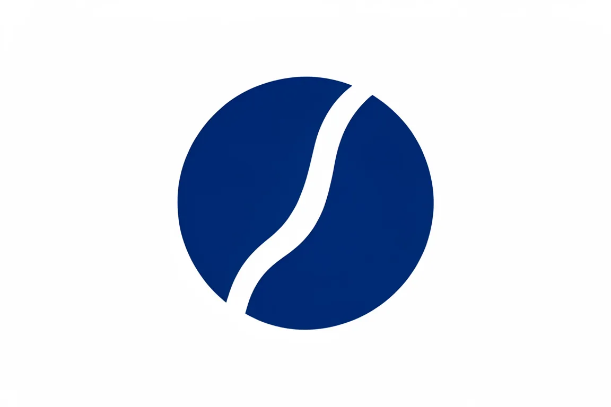

Одна абстрактная форма из квадратов, кругов, полос или петель, которая представляет организацию без букв. Форма подсказывает направление, рост или цикл и достаточно сильна, чтобы стоять одна на вывеске или монете.

Главная идея
Чистая форма несёт смысл одной структурой: квадрат, полоса или петля говорят об устойчивости, росте или цикле на любом языке.
Принципы дизайна
Стройте символ из 1–3 простых форм: квадрата, круга, полосы или ленты.
Выражайте одну идею одним движением: диагональ для роста, петля для цикла, поворот для движения.
Заливайте формы сплошным цветом; пусть негативное пространство, где возможно, образует вторую фигуру.
Держите символ в квадрате 1:1, формы занимают 80–95% квадрата.
Берите один цвет для основной версии, чаще всего глубокий синий, зелёный или чёрный.
Проверяйте символ при 16 px и с двух метров: идея должна читаться в обоих размерах без изменений.